Debug
Identificamos y solucionamos errores en tu software para garantizar un rendimiento óptimo y una experiencia de usuario sin problemas.

Crear
Desarrollamos soluciones personalizadas que se adaptan a las necesidades de tu negocio, desde aplicaciones web hasta sistemas complejos.
Mantenimiento
Ofrecemos servicios de mantenimiento continuo para asegurar que tu software y sistemas funcionen sin interrupciones y estén siempre actualizados.